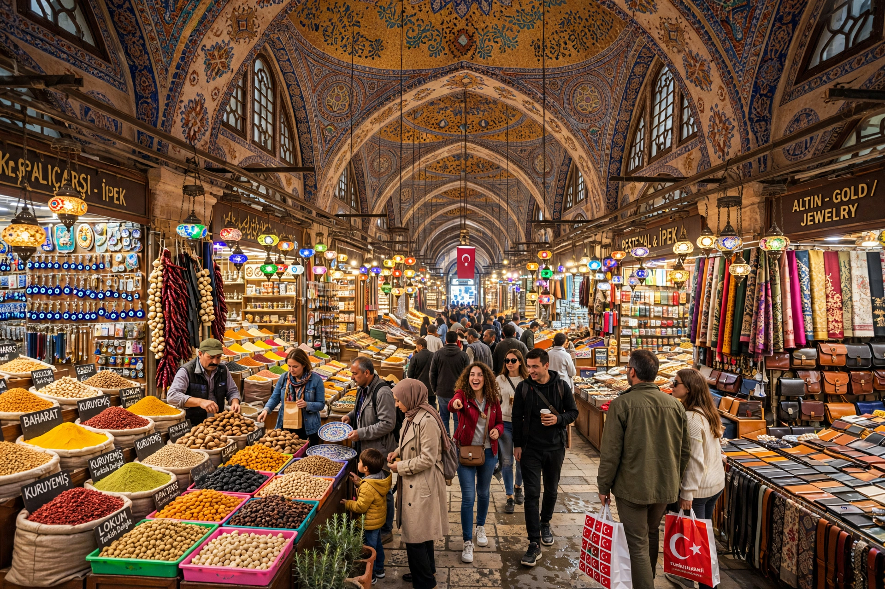

| Grand Bazaar | |
|---|---|
| Location | Fatih, Istanbul, Turkey |
| Construction | 1455–1461, expanded later |
| Streets | 61 covered streets |
| Shops | Over 4,000 |

The Grand Bazaar (Turkish: Kapalıçarşı, "Covered Market") in Istanbul is one of the largest and oldest covered markets in the world, with 61 covered streets and over 4,000 shops covering some 30,700 square metres. It attracts tens of thousands of visitors daily and is often regarded as one of the first shopping malls.
Construction began in 1455–56, shortly after the Ottoman conquest of Constantinople, under Mehmed II, around a stone bedesten for the trade in textiles and jewels. The bazaar grew over centuries, survived fires and earthquakes — notably 1894 — and was repeatedly rebuilt in stone and brick vaulting.
The complex includes mosques, hans (inns), hammams, cafés and fountains, organised by trade: jewellery, carpets, leather, ceramics, antiques and spices. Bargaining is customary.